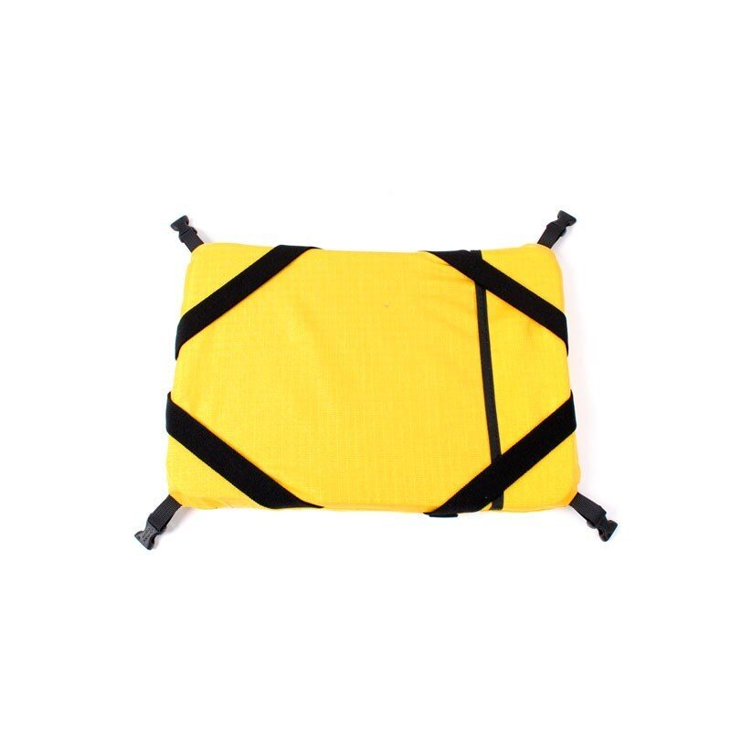

Geowalker Tablet
The Geowalker Tablet is an integral part of the Geowalker system.
- The strongest choice
- Worldwide shipping
- Dutch design
◆ Pickup in Gasselternijveen? Order by bank transfer, note it in the comments, and we remove shipping and send a payment link. 14-day right of withdrawal applies to online orders.
About this product
The Geowalker Tablet is an integral part of the Geowalker system. It is used in conjuction with either the Geowalker Pro or Lite carrier. The Tablet is used to strap the computer to. It can be unclipped from the carrier. This enables the engineer to use the Tablet in different ways. There are different versions for different computers, although many will fit just fine on the Tablet Universal. Another popular version is the Panasonic Toughbook tablet Thanks to the adjustable straps of the Tablet, the computer can be positioned at different heights and angles, depending on the circumstances and personal taste of the professional, making working with the computer more fun. On request the Geowalker system can be customised; e.g. the Tablet can be made-to-measure to a specific computer and the carrier can be produced in multiple colors.
The Geowalker system is based on the extended field experience of geodetic engineer Niek Rengers from Grontmij. The functional and stylish design simplifies the daily routines of the geodetic work. By using the Geowalker system the engineer needn't worry about holding his computer, which enables him to be more relaxed, more independent and more productive in all situations. The Geowalker system can be used for Tachymetric as well as with GPS measurement work in combination with a pen or tablet computer.